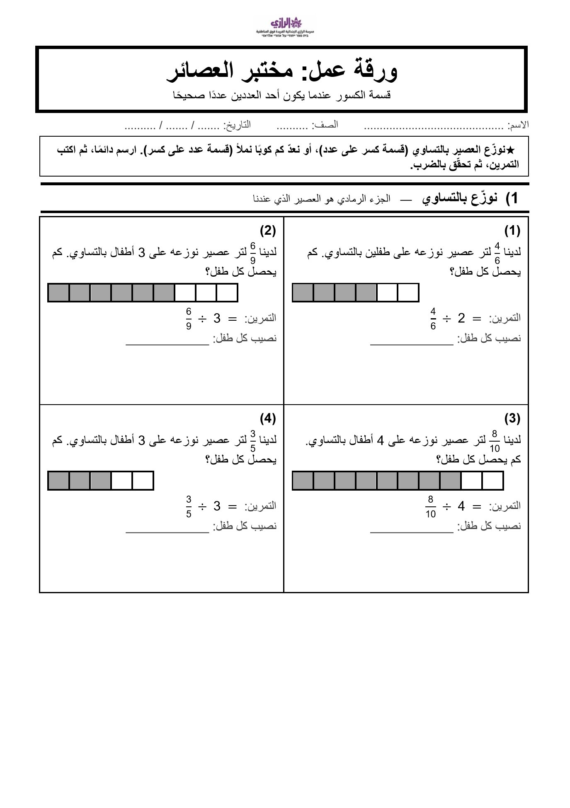
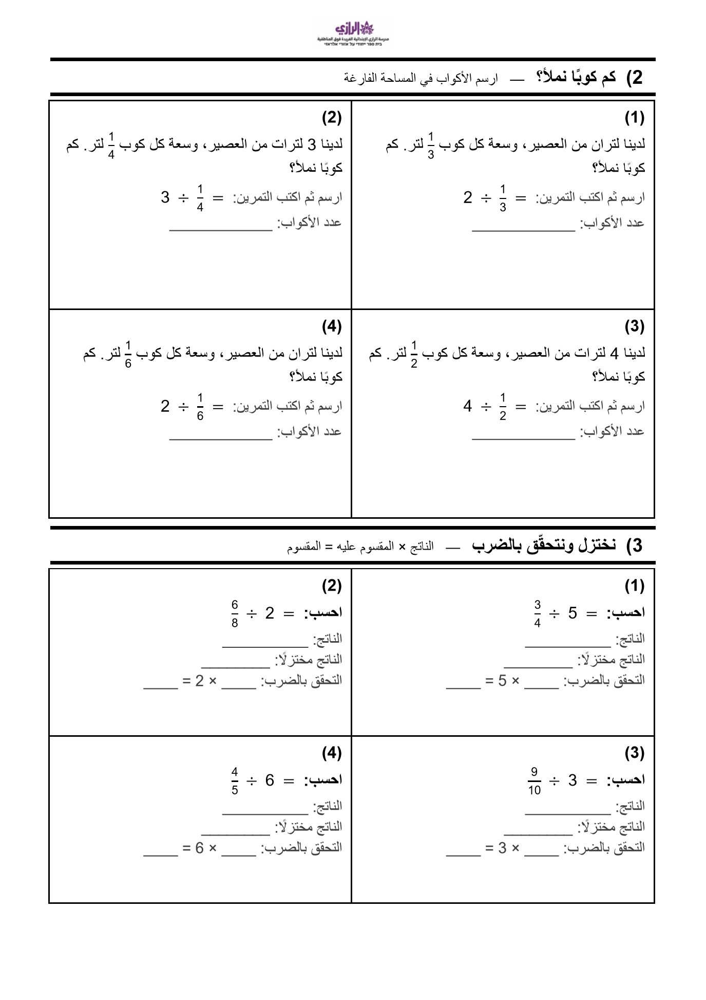
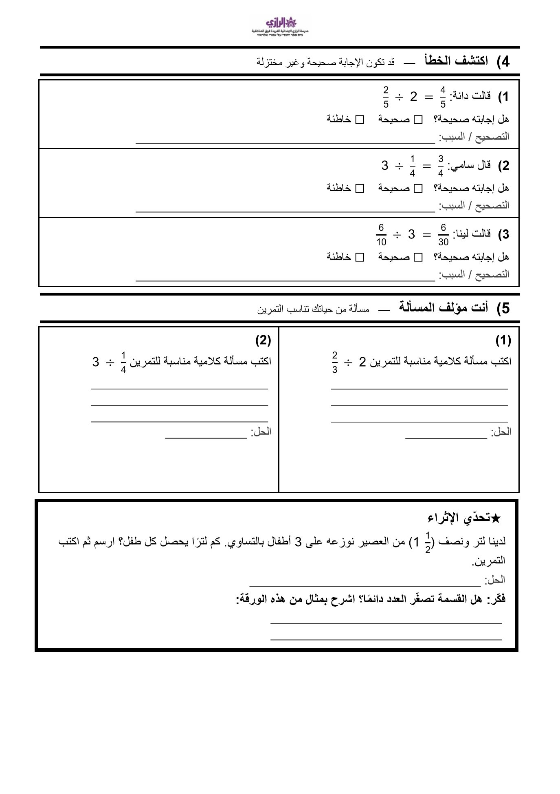

ثلاث صفحات بالأبيض والأسود وخط كبير، جاهزة للطباعة: نوزّع، نملأ الأكواب، نختزل ونتحقّق، ونكتشف الخطأ.



ثلاث صفحات A4 بالأبيض والأسود وخط كبير، جاهزة للطباعة مباشرة
لتغيير الأعداد أو إضافة اسم الصف
الحلول كاملة مع التحقق بالضرب — ملف Word من صفحة واحدة
⟵ العودة لوحدة قسمة الكسور